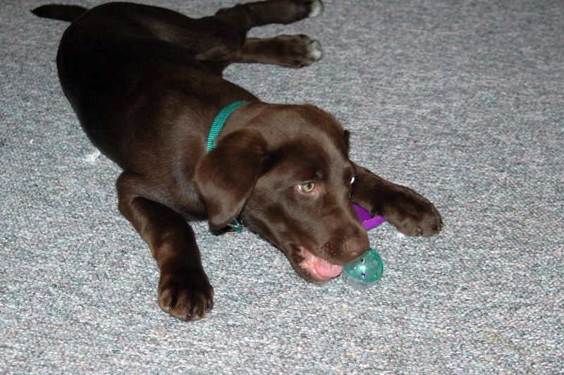

Available Pets
To inquire about any of the animals below, call (555) 476-2984 or email Josie at josie@welovepets.com

Cocoa
Cocoa is sweet as pie and loves to give kisses.

Grayson
Greyson is high energy and high cuddles!

Jack and Annie
Jack and Annie are playful and adorable!

Sam
Sam is a calm kitty who is great with children and other animals, but not with dogs.

Roscoe
Roscoe is an older, house trained dog whose owner had to surrender him. He is ready for a home!

Sheldon
Sheldon likes to sit in the sun, and doesn’t bite!

Jellybean
Jellybean was found in a storm drain, but loves people.